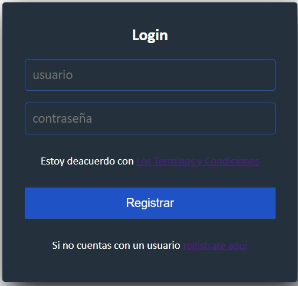

Html5
1/2/2023
Que es Html?, Html es un estandar y que es un estandar?, un
estandar son reglas , por ejemplo: cuidar la estructura
sea una aplicacion o pagina web, que se pueda abrir desde cualquier dispositivo
y si contiene imagenes estas se acomoden de manera correcta
al dispositivo, eso es un Estandar que sea
amigable con los usuarios, eso es HTML.

Html significa Hyper Text Markup Language o
en español Lenguaje de Hipertexto Marcado
no es un lenguaje de progrmacion ya que no tiene ciclos o condiciones
como otros lenguajes de programacion , Html es un lenguaje de
etiquetas y que es una etiqueta?, es un codigo
para dar estructura y desplegar una pagina web,
por ejemplo: su contenido como parrafos, imagenes, titulos, etc.
GITHUB
2/2/2023
GITHUB es una de las principales plataformas para crear proyectos
abiertos de herramientas y aplicaciones y se caracteriza por sus
funciones colaborativas que ayudan a que todos aporten a
mejorar el proyecto, Github te permite crear repositorios ,
pero que son los repositorios? los repositorios contienen todos los archivos de
un proyecto sean codigos, carpetas, etc, y github tiene 2 opciones para los repositorios, publico y privado
dependiendo de si trabajas en equipo o solo.

Y como su nombre indica utiliza un sistema de control de verciones
Git un sistema de gestion de verciones con el cual
los desarrolladores pueden administrar las verciones de sus proyectos
de cada una de las nuevas verciones que sacan de sus aplicaciones para
evitar confuciones.
CSS parte 1
7/2/2023
El profesor nos dijo que modificaramos nuestra bitacora sin usar Css solo usaramos
html, y CSS vendria siendo el que le da diseño a nuestra pagina web

CSS parte 2
8/2/2023
Css en sus siglas en ingles para hojas de estilo en cascada,
es un lenguaje que maneja el diseño y presentacion de las paginas web, es decir,
como lucen cuando un usuario las visita, son capas de "maquillaje"
para el sitio web, colores, y lo hace de forma intuitiva y funciona junto con html.

Css funciona como cajas en las que contiene diferentes elementos como el titulo, el contenido de
la pagina y imagenes, define cajas rentangulades , incluyendo sus
rellenos y margenes, que son generadas para los elementos y que se disponen de acuerdo al modelo de formato visual,
Tambien no es un lenguaje de programacion, es un lenguaje de hojas de estilo y eso
modifica todos los archivos de html.
CSS parte 3
13/2/2023
El profesor nos pidio acabar los detallas de nuestra pagina con CSS
ya e aprendido a asignar clases y modificarlas en css.
Repositorio y presentaciones
15/2/2023
El dia de hoy creamos nuestro repositorio en github ya que el profesor nos pidio
creearlo para subir los cambios de nustra bitacora, tambien paso a varios compañeros
a presentar sus paginas hubo regaños y risas ya que el profe le gusto un diseño
de una compañera en la que su pagina tenia burbujas y tambien le dio
nostalgia ya que una segunda compañera tenia una pagina del 2004.
Evolucion del desarrolo web
16/2/2023
El dia de hoy el profesor nos dijo que la pagina de space jam de la pelicula original del 96
sigue funcionando y nos dijo que le dieramos una revisada y se sintio como un viaje en el tiempo
hay mucha diferencia comparando esa pagina a las de hoy en dias, tambien durante la clase nos
puso a investigar que tanto ha ido evolucionando el desarrolo web y aprendi que
HTML se creo en 1990 y que la primera pagina web fue creada en 1991 y se llamna WORLD WIDE WEB
y hasta 1995 hasta 1996 fue donde estuvo presente CSS,PHP,JavaScript, y Flash
CSS y PHP proporcionaron mayor simplicidad y dinamismo y Flash y JavaScript aportaron la
interaccion, animacion y efectos especiales, hasta 2008 fue que se empezo hacer
diseño web para los moviles y de hay a 2010 fue cuando HTML5 salio a la
luz, y de hay hasta la actualidad no avido cambios tan grandes en el desarrollo web,
eso fue lo que aprendi esta clase.

Login
20/2/2023
Login, un login es muy generico lo mas basico a la hora de creear
una pagina web, ¿pero que es un login? un login es la clasica pantalla donde
te piden un usuario y una cotraseña para poder registrarte en una pagina web
esta sirve como un intermedio entre crear un perfil y la pagina de
inicio, tambien un login tiene que tener un boton de registro y un hipervinculo
(son aquellos parrafos que cuentan con un color diferente y puedes darles clic)
que te redirrecionan a otra pagina en caso de no contar con un usuario y contraseña y sele
llama formularios que trendras que llenar una serie de datos para llevar
a cabo tu registro.

Contraseña
22/2/2023
El dia de hoy hisimos un pequeño formulario para que el usuario pueda
recuperar su contraseña en caso de que se le olvide.

Proyecto web
23/2/2023
El dia de hoy el profesor nos pido que ya estuvira listo nuestro registro de usuario, login y el
formulario para la recuperacion de contraseña, el profe nos pidio estos avances para el dia de hoy.
Tambien el profesor nos comento como implementariamos el "sistema del tio" para que no se saturara
la pagina y nos propuso poner ideas de mejora con sus pros y contras.
Examen
27/2/2023
El dia de hoy el profesor nos ayudo a dar un repaso de los temas que vendran en el examen
por ejemplo: el profesor nos explico que es HTML5, HTML5 es un lenguaje estructurado
de etiquetas , o tambien que es CSS?, que vendria siendo una hoja de estilo
estructurada y el diseño a un sitio web, tambien que son las cajas?, las cajas es cada
uno de los componentes es como una caja por ejemplo: las etiquetas "h1" que solo afecta a
los titulos o "p" que solo afecta a los parrafos son varias cajas y cada uno tiene sus atributos
que estos son los que modifican a cada una de las etiquetas anteriores esto se hace por medio de CSS
Aparte de eso tambien el profesor nos comento que comensaramos hacer un nuevo index
que hisieramos un menu con minimo 20 articulos de la cafeteria de la escula
ya estamos empezando a creear la pagina para la cafeteria del cetis 155
Fin del primer parcial
27/2/2023
El dia de hoy el profesor nos dijo que esta bitacora se entrega para el dia 2/2/2023
a mas tardar a las 2 pm y tambien nos dejo avanzar con el proyecto del menu todas las horas de
su clase esta es la ultima actualizacion de la bitacora del primer parcial.

Proyecto Beta
1/3/2023
Hoy comensamos con los eqipos en el grupo, empezamos un nuevo proyecto para la cafeteria pero
estabes en grupo, somos un grupo grande nos dividimos en 5 areas distintas Back end, Front end,
Base de datos, Testing y Documentacion y quien tiene el control de estas 5 areas es el Scrum master
, decidi meterme al area de Back end para ver que tal me
desempeñaba en la area, para empezar nos pidieron hacer un login para el alumno eso fue todo por el dia de Hoy
Proyecto Beta
2/3/2023
El dia de hoy continua con mi equipo para lograr hacer el login para el usuario
estuvimos investigando sobre como podriamos hacerlo ya que estamos usando PHP, despues de un rato
logramos hacer el login y conectarlo a la base de datos solo que teniamos algunos errores
Proyecto Beta
6/3/2023
Segimos con el login solo que resolvimos unos errores de la clase anterior
como el inicio de sesion que no nos redirige a ningun lado.
Proyecto Beta
8/3/2023
Logramos poder hacer el login para el usuario ahora
la tarea de hoy es hacer 2 tablas para el administrador en las que
se puedan administrar el personal y el menu de la cefeteria, comence
investigando sobre esas tablas en youtube y encontre una interesante usando
solo php le comente a mi equipo y las comense hacer.
Proyecto Beta
13/3/2023
El video que encontre se repartia en 3 partes comense con el primero
en donde empieza a darle los funcionamientos basicos como mostrar los datos en la tabla solo que
tuve problemas con las conexiones entre archivos PHP
y tambien con los campos, pude arreglar las conexiones entre archivos php y avanse un poco con
los nombre de los campos.
Proyecto Beta
15/3/2023
Hoy continue con la tabla arregle los nombres de los campos, probe la
tabla pero me salto un error a la hora de insertar datos, le di una revisada al codigo
para ver donde se encontraba el error y encontre que los nombres de los campos en donde
se insertan los datos estaban mal.
Proyecto Beta
16/3/2023
El dia de hoy corregi los nombre de los campos en donde se insertan los
datos y pude resolverlo.
Proyecto Beta
20/3/2023
El dia de hoy me pase a la 2 parte de los videos para hacer las tablas
estuve agregando un buscador a la tabla.
Proyecto Beta
22/3/2023
El dia de hoy termine de agregar el buscador por completo y me pase al 3 video
el ultimo para terminar la tabla bien.
Proyecto Beta
23/3/2023
El dia de hoy termine por completo la tabla del personal ya incluye un buscador y tambien
el 3 video era solo para traducir al español ciertas cosas, tambien empese adaptar la tabla del personal
para la del menu de la cafeteria.
Proyecto Beta
27/3/2023
El dia logre avansar para adaptar la tabla de la cafeteria logre que
en la tabla me muestre los productos tambien cambie los campos de la tabla.
Proyecto Beta
29/3/2023
El dia de hoy casi termino de adaptar la tabla solo me falta agregar el buscador
para que quede lista la tabla de menu.
Proyecto Beta
30/3/2023
Logre terminar de adaptar la tabla para el menu.
Proyecto Beta
3/4/2023
El dia de hoy estube viendo el login y me fije que le faltaban
algunas cosas entre ellas una verificacion y tambien tenia dudas sobre
como ingresaria el administrador le pregunte a mi profesor y comento
que los administradores ya tiene cuentas echas y estas estan en la base de datos
y que solo faltaria la validacion que estaria por medio de roles
si es un numero 1 es admin y si es 2 es alumno le comente al equipo de base de datos
sobre las cuentas y me dijieron que me pasarian la base de datos con los usuarios
agregados.
Proyecto Beta
5/4/2023
El dia de hoy estuve cambiando las base de datos de las tablas y el login ya que
nos confuncimos mucho con las base de datos y tenia muchas unas eran verciones viejas otras
ya ni se usaban estuve revisando y preguntando al equipo de base de datos cuales eran las bases de datos
actuales y que se usarian para los 2 programas.
Proyecto Beta
6/4/2023
El dia de hoy logre implementar las bases de datos correctas y elimine las base de datos que ya
no servian.

Proyecto Beta
10/4/2023
El dia de hoy estuve viendo con mi equipo referente al login le comente al Scrum master
como iva a funcionar el login y me encargo investigar sobre eso.
Proyecto Beta
12/4/2023
Le comente a mi equipo que investigara sobre lo que falta del login.
Proyecto Beta
13/4/2023
El dia de hoy estuve bien con mis compañeros sobre el diseño del login y decidi comentarle a front sobre
el diseño de este y tambien hoy fue la ultima clase del 2 parcial
el profesor nos asusto a todo el grupo ya que queria la bitacora para hoy y algunos se nos olvido
actualizar la bitacora pero decidio mejor que se entregara
a final del 3 parcial.

Proyecto Beta
8/5/2023
Estuve viendo como arreglar unos errores en el programa y tambien
acompañe a base de datos con el profesor para resolver una duda referente al pago que
se hara en la base de datos
Proyecto Beta
11/5/2023
Estuve viendo con mi equipo lo que falta sobre el login
estuvimos implementando una sesion iniciada y tambien el profesor nos pidio un carrito
de compras junto con un tiket en el que biene la compra.
Proyecto Beta
17/5/2023
El dia de hoy terminamos la sesion iniciada a la hora de iniciar sesion aparece el nombre del
usuario en la pagina principal.
Proyecto Beta
18/5/2023
El dia de hoy mi equipo y yo estuvimos investigando como implementar la
verificacion del rol del usuario le preguntamos al profesor referente a la
verificacion me comento que en la consulta en la que se llama a la tabla donde estan
los datos del usuario tambien se deve llamar todo lo que este en la 2 tabla que es
donde estan los roles y apartir de hay implementarlo a la condicion para iniciar sesion
tambien me dio unas recomendaciones para mejor la seguridad de mi consulta a la base de datos.
Proyecto Beta
22/5/2023
Estuve con mi equipo preguntandonos como podriamos hacer la condicon para validar el rol
estuvimos intentando pero no lo conseguimos.
Proyecto Beta
24/5/2023
Resolvi una duda referente a los metodos de pago que se usaran en el programa
el profesor me comento que se usaran 2 metodos de pago paypal y en efectivo
y tambien sobre los datos que llevara el ticket de la compra , tambien el profesor me
comento que el metodo de pago en efectivo seria a traves de un codigo Qr
Proyecto Beta
25/5/2023
El dia de hoy segui investigando metodos para logar validar el rol del usuario y tambien
es el fin del 3 parcial esta es la ultima actualizacion de la bitacora de este parcial.